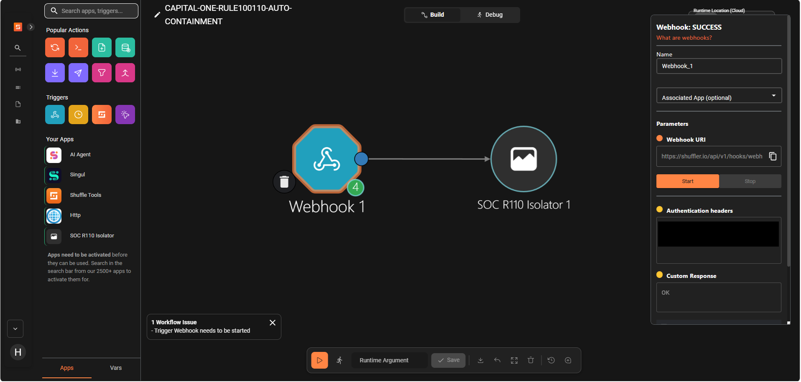

3. Shuffle을 통한 경보 검증과 대응 연계
Shuffle은 Wazuh에서 생성된 경보를 받아 사전에 정의된 대응 절차와 연결하는 SOAR 구성 요소이다. Wazuh가 로그를 수집하고 이상 행위를 탐지하면, Shuffle은 전달된 Alert가 허용된 Rule과 입력 조건을 충족하는지 검증한 뒤 제한된 GitOps 대응을 실행한다.
본 프로젝트의 목적은 모든 Alert에 무조건 자동 대응하는 것이 아니다. 오탐, 변조된 요청 또는 대상이 불명확한 Alert가 Kubernetes 및 GitHub 저장소 변경으로 이어지는 것을 방지하는 것이 핵심이다.
따라서 Wazuh 로컬 Integration은 원본 Alert의 Rule별 allowlist와 AWS 사건 조건을 먼저 검증하고, Shuffle은 전달받은 최소 필드의 exact Schema·시각·해시·대응 대상을 다시 검증한다. 두 검증을 모두 통과한 Alert만 코드에 고정된 Workflow로 전달한다.
3.1 Shuffle의 역할
| 단계 | Shuffle의 역할 | 확인 목적 |
|---|---|---|
| 경보 수신 | Wazuh Alert를 인증된 Webhook으로 수신 | 비인가 요청 차단 |
| 입력 검증 | Rule별 exact Schema, 시각, 해시 및 고정 대응 입력을 검증 | 변조된 Alert 및 임의 대상 조치 방지 |
| 이벤트 식별 | 원본 이벤트 ID와 Alert 본문의 SHA-256을 무결성·추적 식별자로 사용 | 원문 비공개 상태에서 사건 추적과 입력 무결성 확인 |
| 대응 분기 | Rule 100110과 100111을 서로 다른 고정 Workflow로 전달 | Alert 의미에 맞는 제한적 대응 수행 |
| 결과 검증 | GitHub Workflow Run ID와 고정 Repository·Branch를 검증 | 예상하지 않은 Workflow 실행 방지 |
| 결과 기록 | Alert 식별자, Run ID, Commit SHA 및 변경 결과 기록 | 사후 추적 및 롤백 근거 확보 |
Alert가 Repository, Branch, Namespace 또는 실행 명령을 임의로 지정할 수 없으며, 대상은 코드에 고정되어 있다.
3.2 경보 검증 원칙
Rule 100110과 Rule 100111은 탐지 의미와 대응 목적이 다르기 때문에 서로 다른 입력 조건으로 검증한다.
Rule 100110 검증 조건
Rule 100110은 DVWA가 EC2 IMDS 자격증명 엔드포인트를 대상으로 실행한 명령에서 출력이 반환된 사실을 조기에 탐지한다. 자격증명 값의 유출이나 AWS 권한 악용까지 단독으로 확정하는 Rule은 아니다.
주요 검증 조건은 다음과 같다.
Rule 100110은 별도의 Pod Agent가 판단하는 경보가 아니다. DVWA가 기록한 안전한 감사 로그를 Wazuh가 탐지하고, Wazuh Integration과 Shuffle이 take_id, Pod 이름·UID, 이벤트·본문 해시 및 시각 조건을 순서대로 검증한다.
Rule 100111 검증 조건
Rule 100111은 탈취된 Node Role을 사용하여 보호 S3 객체의 실제 바이트가 반환된 사건을 침해확정 단계로 탐지한다.
주요 검증 조건은 다음과 같다.
이 조건은 단순 S3 API 호출 시도가 아니라, 고정된 보호 객체의 실제 데이터가 반환된 사건만 탐지하기 위한 것이다. 계정·Role·Bucket·Object Key와 CloudTrail 원문은 Wazuh 호스트에서 검증한 뒤 외부로 보내지 않으며, Shuffle에는 rule_id, 발생 시각, Wazuh Alert ID, CloudTrail eventID SHA-256, 원문 SHA-256만 전달한다.
3.3 Capital One 시나리오의 대응 연계
Capital One 시나리오에서는 Rule 100110과 Rule 100111을 단계적으로 구분한다.
Rule 100110 — 조기 탐지 및 Workload 격리
Rule 100110은 DVWA에서 EC2 IMDS 자격증명 엔드포인트를 대상으로 실행한 명령이 실제 출력을 반환한 사실을 탐지한다.
검증된 Alert는 다음 절차와 연결된다.
Pod 격리는 공격 원인을 완전히 제거하는 조치가 아니라, 침해된 시스템의 네트워크 연결을 우선 차단하는 긴급 1차 대응이다. 이를 통해 추가 IMDS 접근, 내부 서비스 접근 및 추가 정보 유출 가능성을 제한하고 관제자가 조사할 시간을 확보한다.
Rule 100111 — S3 침해확정 및 취약점 완화
Rule 100111은 승인된 Node Role로 보호 S3 객체를 조회하여 실제 데이터가 반환된 사건을 탐지한다.
검증된 Alert는 다음 절차와 연결된다.
Rule 100111 대응은 S3 버킷을 격리하는 조치가 아니다. 공격 진입점인 DVWA Web Application의 취약한 설정을 강화하여 동일한 SSRF·명령 실행 경로가 다시 사용되는 것을 방지하는 조치이다.
Rule 100111 자동 대응은 실제 Shuffle 실행을 통해 GitHub Actions Run 32637113392가 성공했으며, DVWA 보안 수준이 impossible로 적용된 사실을 확인하였다.
인증 Webhook과 Rule
100110·100111을 검증·분기하는 고정 Shuffle Action이 확인되는 화면캡션: Wazuh 경보를 인증된 Webhook으로 수신하고, 고정 Action 내부에서 Rule별 GitOps Workflow로 분기하는 Shuffle 구성
- 인증 Webhook과 SOC 대응 Action의 연결 구성
{kind=link}

- Wazuh 입력을 $exec로 전달하고 마스킹된 GitHub Token을 사용하는 고정 SOC 대응 Shuffle Action 설정

SOC harden Rule 100111Workflow Run32637113392의 성공 화면
캡션: 보호 S3 객체의 실제 바이트 반환 탐지 후 DVWAlow → impossible변경 성공
- Rule
100111대응 GitHub Actions가 성공적으로 완료되고 실행 증적 Artifact가 생성된 결과


- 입력된 Rule ID와 이벤트 해시를 검증하여 승인된 경보만 대응하도록 제한한 계약 검증 과정.

- DVWA 보안 수준 변경사항을 커밋·푸시하고 정제된 실행 증적을 Artifact로 보관한 결과.

3.4 자동 대응을 구현하는 핵심 코드
observability/wazuh/integrations/custom-shuffle-soc — Rule 100111 원문을 로컬에서 완전 검증하고 외부에는 최소 해시 필드만 반환한다.
return {
"rule_id": "100111",
"event_time_utc": event_time,
"wazuh_alert_id": alert_id,
"event_id_sha256": sha256(event_id),
"raw_message_sha256": sha256(full_log),
}autocontainment.py — Rule별 exact Schema와 시간·해시를 검증하고 저장소·Branch·Workflow가 고정된 URL로만 분기한다.
if rule_id == "100110":
inputs = validate_rule_100110_payload(parsed, now=now)
dispatch_url = DISPATCH_URL
elif rule_id == "100111":
inputs = validate_rule_100111_payload(parsed, now=now)
dispatch_url = HARDEN_DISPATCH_URL
else:
raise ContractError("rule_id")
body = {"ref": "main", "return_run_details": True, "inputs": inputs}soc-contain-dvwa.yml — Rule 100110 입력과 변경 파일을 제한하고, 지정 Pod 이름·UID만 GitOps 격리 요청에 기록한다.
test "${GITHUB_REPOSITORY}" = "Unoh03/Uns-DVWA"
test "${GITHUB_REF}" = "refs/heads/main"
test "${RULE_ID}" = "100110"
requested = {
"replicas": "2",
"enabled": "true",
"pod_name": os.environ["POD_NAME"],
"pod_uid": os.environ["POD_UID"],
}
test "${paths[0]}" = "deploy/dvwa/values.yaml"soc-harden-dvwa.yml — Rule 100111만 허용하고 DVWA 보안 수준 전환 스크립트와 단일 파일 변경만 허용한다.
test "${RULE_ID}" = "100111"
python .github/scripts/update-dvwa-security-level.py contain
test "${paths[0]}" = "deploy/dvwa/values.yaml"gitops/argocd/dvwa.yaml — GitHub Actions가 만든 제한된 Git 변경을 EKS에 자동 반영한다.
syncPolicy:
automated:
enabled: true
prune: true
selfHeal: true3.5 승인·롤백·재검증 원칙
SOAR 자동 대응은 탐지 정확도뿐 아니라 조치 자체의 안전성도 확보해야 한다. 대응 실행 전에는 대상과 변경 범위를 검증하고, 실행 후에는 결과와 변경 이력을 기록한다.
| 구분 | 적용 원칙 |
|---|---|
| 대상 고정 | 지정된 DVWA Workload와 Unoh03/Uns-DVWA의 main Branch만 허용 |
| 입력 검증 | Rule별 Schema, allowlist, 이벤트 시각 및 이벤트 식별자 검증 |
| 범위 제한 | Alert가 임의 Namespace, Repository, Branch 또는 명령을 지정할 수 없도록 제한 |
| 이벤트 식별 | Rule 100110은 Push event_id, Rule 100111은 CloudTrail eventID의 해시 사용 |
| 재실행 통제 | 동일 GitOps 상태에 대한 변경은 멱등적으로 처리하고 Workflow 동시 실행 제한 |
| 롤백 | 격리 해제 또는 Reset Workflow를 통해 DVWA를 정상 상태로 복구 |
| 재검증 | Argo CD Revision, Pod Ready 상태, DVWA 보안 수준 및 공개 서비스 응답 확인 |
| 증적 보관 | Wazuh Alert ID, 이벤트 해시, Workflow Run ID, Commit SHA 및 실행 결과 기록 |
Rule 100110 격리는 Pod 이름만으로 대상을 선택하지 않는다. Kubernetes UID, 애플리케이션 Label, ReplicaSet 및 Deployment 소유 관계를 검증한 뒤 일치하는 Pod만 격리한다.
Rule 100111은 values.yaml 전체를 임의로 수정하지 않는다. defaultSecurityLevel: low 값을 impossible로 변경하는 제한된 전환만 허용하며, 그 외 파일 변경이 발생하면 Workflow를 중단한다.
Shuffle 실행 결과에서 입력 검증 결과, Rule ID, 이벤트 해시 및 GitHub Workflow Run ID가 확인되는 화면캡션: 변조된 입력과 임의 대상을 거부하고 고정된 대응만 허용하는 Shuffle 검증 결과
- (성공) Rule
100111입력 검증 후 고정된 GitHub Workflow로 대응을 전달한 Shuffle 실행 결과

- (해당 Rule이 없을 경우) 허용되지 않은 Rule ID 입력을 검증 단계에서 거부하여 후속 GitHub Workflow 실행을 차단한 Shuffle 음성 테스트 결과


Reset Workflow Run32643206492와 Argo CDSynced / Healthy, DVWADEFAULT_SECURITY_LEVEL=low가 확인되는 화면
캡션: 시연 종료 후 GitOps 기반 DVWA 정상 상태 복구, 원래 상태로 원복
- Reset Workflow 성공 후 DVWA Deployment의
DEFAULT_SECURITY_LEVEL=low적용을 확인한 정상 상태 복구 결과.


3.6 구현 및 기록된 검증 상태
| 항목 | 현재 상태 |
|---|---|
Wazuh Rule 100110 탐지 | Runtime Alert 확인 |
Wazuh Rule 100111 탐지 | Runtime Alert 확인 |
| Wazuh → Shuffle Integration | Rule 100110, 100111 대상으로 연결 |
| Shuffle 인증 및 입력 검증 | 구성 및 검증 완료 |
Rule 100110 고정 격리 Workflow | 코드 및 계약 테스트 완료 |
Rule 100110 실제 Pod 격리 실행 | Argo CD에서 원본 Pod 격리·보존 및 정상 대체 Pod 확인 기록 있음 |
Rule 100111 low → impossible 대응 | 실제 실행 성공 |
| GitHub Actions 실행 증적 | Run 32637113392 성공 |
| Reset 및 촬영 기준선 복구 | Run 32643206492 성공 |
| DVWA 실행 상태 | Reset·Daily Up 이후 변동하므로 촬영 직전 low·비격리·Pod Ready 재확인 |
| Argo CD 실행 상태 | 배포 시점에 따라 변동하므로 촬영 직전 Revision과 Synced / Healthy 재확인 |
기존 Dashboard의 NOT CONNECTED 문구는 자동 대응 연결 이전에 작성된 정적 안내이므로 현재 구현 상태와 일치하지 않는다. 최종 보고서에는 해당 문구 대신 실제 Shuffle 실행 결과, GitHub Actions Run 및 Argo CD Revision을 증적으로 사용한다.
3.7 구현의 의의
본 프로젝트는 S3 자체를 격리하거나 탈취된 IAM 자격증명을 직접 폐기하는 시스템이 아니다.
대신 다음과 같은 단계적 SOC 대응 흐름을 구현했다.
웹 애플리케이션 공격 식별 → IMDS 접근 조기 탐지 → 침해 Pod 확산 제한 → S3 침해확정 → 취약한 웹 애플리케이션 설정 강화 → GitOps 기반 복구
특히 Alert가 전달한 임의 대상을 신뢰하지 않고, Rule별 입력 조건과 대응 대상을 코드에 고정했다는 점에 의의가 있다. 이를 통해 자동화 수준보다 조치의 통제 가능성과 사후 추적 가능성을 우선하였다.
Pod 격리는 공격 원인을 근본적으로 제거하지는 않지만, 침해된 장비의 네트워크 연결을 우선 차단하는 것과 같은 효과를 가진다. 추가 자격증명 조회와 내부 확산을 제한하고, 관제자가 IAM 및 노드 수준의 후속 대응을 수행할 시간을 확보한다.
3.8 한계 및 향후 개선 방향
현재 Rule 100110은 EKS Pod Identity 자격증명 엔드포인트가 아니라 EC2 IMDS를 통한 Node Role 접근 징후를 탐지한다.
따라서 Pod를 격리하더라도 이미 외부로 유출된 Node Role 자격증명은 계속 악용될 수 있다. Pod 격리는 추가 공격을 제한하는 1차 대응이며, 다음 후속 조치가 필요하다.
향후 Pod Identity를 적용하면 다음과 같이 대응 관계를 더욱 명확하게 구성할 수 있다.
Pod Identity 자격증명 접근 → web-app Role 탈취 징후 탐지 → 해당 Pod 격리 → Role 세션 차단
현재 구현은 이를 위한 전 단계로서, 웹 애플리케이션 공격 지점의 식별과 워크로드 단위 자동 격리, 침해확정 후 GitOps 기반 취약점 완화를 검증한 프로젝트로 평가할 수 있다.
참고: Shuffle 연계 설계 문서, Shuffle Workflow 계약